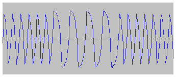

|
| Return to index |
The following sample programs and tapes are provided:
Note: Where indicated (using a cassette image) some of these sample programs and tapes are recovered from original software. I do not own the copyrights for these recovered programs and so I sincerely hope no one will mind them being included in this package. If any of the original copyright owners object, please contact me at the email address at the bottom of the page and I will gladly remove anything that should not be here.
In addition this page provides some notes about the tape formats used by the simulator and details of how to recover programs from cassette tapes.
To load and run a program written in BASIC:
LOAD and press Enter.
The cursor will stop flashing to indicate input has been switched to the
cassette player.RUN and press Enter to run the program.Machine code program tapes need to be loaded using the Monitor:
Often machine code is loaded in two or more phases, where the first phase loads a more sophisticated checksum loader that then loads the remaining code.
| Source Code | samples/basic/hello1.basic |
| Load as | BASIC |
This is a very simple "hello world" BASIC program. This program is used in the quick start guide.
| Source Code | samples/basic/charset.basic |
| Load as | BASIC |
This is the program from page 38 of the manual which can be used to display most of the character set of the machine. It is not quite the same as the listing in the manual, as that listing actually contains a couple of bugs and also needed some changes to work correctly with the New Monitor.
 |
|
|
|
| Source Code | samples/basic/blackbox.basic |
| Load as | BASIC |
This is game kindly sent to me by Chic McGregor. It was first published in the July 1980 issue of Personal Computer World and is provided here exactly as originally published. When you run the game it can provide some instructions on how to use it.
There's an interesting history to this particular program as it was almost
certainly the first user written
BASIC program for the UK101.
How can we know this? Chic tells me that the very first shipment of UK101
machines were sent out without any BASIC ROMs because the ROMs were not ready
due to some issues in the factory in Scotland that was producing them.
As it happened Chic (who bought one of those very first machines) was also
a young engineer working in that very factory - so not surprisingly managed
to get hold of a set of ROMs ahead of anyone else.
|
The program should give some instructions on how to use it. You should set the keyboard to game mode to play the game.
| Source Code | samples/basic/labyrinth.basic |
| Load as | BASIC |
This is a version of the ubiquitous "first-person 3D maze" type of game, popular in the early 1980's - this one was written by me in about 1982, I think.
It was written for my modified UK101 and requires a 32-line display and the CEGMON monitor installed; it also works better with a faster CPU. So ensure the following configuration options are specified when starting the simulator:
-p rom.monitor=CEGMON,video.rows=32,cpu.speed=4
When the program starts it will display some instructions on how to play the game.
In addition to the keys listed in the instructions you can also press the
G key to display the current maze and your position
and trail within it.
| Source Code | samples/basic/startrek.basic |
| Load as | BASIC |
This game was written by Martin Ward and is an impressive achievement squeezing just about everything it can into the 8K BASIC memory space!
This game must be run on a 32-line display and requires a patched version of the standard monitor ROM that fully supports 32 lines. A suitable monitor called NEWMON32.ROM can be found in the samples/roms directory. Ensure the following configuration options are specified when starting the simulator:
-p rom.monitor=samples/roms/NEWMON32.ROM,video.rows=32
It's probably best to run the game with a standard 1MHz CPU speed to start with until you get the hang of the controls. Then maybe switch to 2MHz (or more) for a greater challenge!
Real Time Star Trek is, in the modern jargon, a procedurally generated, open world, RTS (real time strategy) game with destructable environments.
The object of the game is to destroy all the Klingons before the time runs out: when they will perfect their secret weapon and take over the galaxy.
To execute a function: hold down the function key (a letter) plus an optional direction key (a digit). For example, to move down, firing your phasers and recharging shields all at the same time, hold down: "I", "5", "P", and "S".
Hold down the key(s) and wait for the function to take effect. Press the function before pressing the direction.
The numbers around the E show the directions: 1 for straight up etc.
You can operate several functions at the same time, by holding down more than one key at a time.
Functions are:
| I + dir | Impulse Drive: move around within the current sector |
| W + dir | Warp drive: move to an adjacent sector |
| T + dir | Fire a photon torpedo in the given direction. If a torpedo hits a star, it will create a large explosion which may destroy nearby Klingons (or you!) |
| S | Recharge shield energy: hold down to charge your shields up to the maximum of 500 energy units. Energy is taken from your main energy store, which recharge (by the power plant) up to its maximum of 3000 units. |
| R | Repair. You can repair damage at the cost of energy. |
| P | Fire phasers. Phasers automatically lock on target and keep firing as long as you hold down the P key. Phaser effectiveness decreases with distance. The Klingons only have phasers, so their weapons do more damage the closer you are to them. |
| G | Galaxy Scan: displays the map of the galaxy for as long as you hold down the G key. |
The area on the left is the short range scan, showing the current sector:
| E | The Enterprise (you!) |
| K | Klingon |
| B | Starbase |
| * | Star |
The bottom right is the long range scan, showing your sector and the eight surrounding sectors:
| Tens digit | number of Klingons in that sector |
| Units digit | number of starbases in that sector |
| 9 | edge of galaxy |
To dock with a starbase, move next to it (using the impulse drive I+direction) and press Y. This will repair all damage, give you full energy, and 8 torpedoes, and reduce shields to zero. So hold down S afterwards to charge up your shields again.
 |
|
This is the Extended Monitor that was provided on a sample tape that came with the original machine. The extended monitor provided some extra function to help with writing and debugging simple machine code programs.
Details of the extended monitor can be found on its instruction sheet.
When the program loads it will first load a short checksum loader program then automatically load the rest of the code in checksum format.
|
This is a copy of Premier Publication's excellent Invaders space invaders game.
The game was intended to be played on a standard 1Mhz processor, if you have over-clocked the processor (see system configuration) it may run too fast. Some old notes I have suggest that location $0F69 defines the game speed with the default value being 20 - on a 2MHz machine this might be best changed to 40, it says.
To move the laser the CTRL is used to go left and the left-SHIFT key is used to go right. On a real UK101 the CTRL-key is above the SHIFT-key so CTRL-for-left and SHIFT-for-right makes sense. Unfortunately these keys are the other way up on a PC keyboard so this is not ideal! I once knew some locations to patch to change these keys, but I can no longer find those notes - sorry! You should set the keyboard to game mode to play the game. Once the game is loaded you can reset the machine and perform a warm start to restart it at any time.
|
This is a copy of Craig Clapp's excellent 8K Super Invaders space invaders game, which shows just how much could be done with the limited character set graphics.
This games is a mix of machine code and BASIC, but it is loaded
as if it were a BASIC program and automatically handles loading both
the machine code and BASIC parts.
If you do a warm start you can restart it just by typing RUN.
This game rather cleverly hooked into the ACIA timing signals to ensure it always ran at the correct speed, even if the CPU was over-clocked to 2MHz - my thanks to Craig for explaining to me how this worked so I could ensure the emulator handled it correctly! It would also produce some simple sound effects if you hooked up a speaker or earphone to the ACIA output - this is not implemented in the simulation yet but I hope to add it soon.
To move the laser the left-SHIFT key is used to go left and the Z key is used to go right. The right-SHIFT key is used to fire, but note there are some problems when trying to use both shift keys independently on Windows (something to do with the way Java reports the key events), so you should use an alternative to the right-SHIFT if you can. When the keyboard is set to game mode either the right-CTRL or the Windows-Menu key (both normally directly beneath the right-SHIFT) can be used as alternatives for the right-SHIFT key.
|
This is a copy of Arcadia's Asteroids game, another really well done game given the limitations of the UK101's simple character set graphics.
Asteroids is actually a BASIC program with a large section of
additional machine code which it loads automatically.
Once that has loaded the game will start.
If you do a warm start you can restart it just by typing RUN.
To rotate the laser press the left-SHIFT to rotate anti-clockwise or press the right-SHIFT to rotate clockwise. Press the SPACE bar to fire. The laser does seem to rotate rather fast - I'm not sure if it always did this or if it is related to the simulation! You should set the keyboard to game mode to play the game.
When the UK101 wrote data to a cassette tape it was written as a series of bytes. Although most of the bytes that were written were standard ASCII characters, the tapes would include some control characters, some padding NUL (0x00) characters and possibly some bytes whose values were outside the range of the standard character set. If these tapes are saved as PC files, the resulting file is not guaranteed to be viewable on the PC and can probably not be successfully edited using standard PC editors without some data corruption.
To help overcome these problems the simulator allows tapes to be stored in one of three formats:
All the sample machine code programs are in binary format
and have a file extension of .tape.
The conversion leaves any standard ASCII character unchanged,
it detects line ends and stores them as standard PC style
line ends and any other unrecognised byte is converted to an
escaped form \nn where nn
is a pair of hexadecimal digits.
All the sample BASIC programs are in ASCII format and
have a file extension of .basic.
The simulator will correctly recognise and load tapes any of the three formats and can save in any selected format. If you are saving a BASIC program it would make sense to save in ASCII format (which is the default) as the resulting program can then be easily viewed and edited on the PC. If you are saving a tape to potentially load back onto a real UK101 you will need to ensure it is in binary or maybe audio format. The utility programs Tape Reader and Tape Writer can be used to quickly convert between the various formats.
When an audio file is produced the waveform created can either be an approximation to the output generated by the real hardware (which is the default) or pure sine waves (which is probably what the Kansas City standard specified).
|  | |
| System Waveform | Sine Waveform |
|---|
If you have original UK101 programs on old cassette tapes it is usually possible to recover them on a PC so they can be loaded and used with the simulator, provided the tapes are still playable and provided you still have something to play them with. The first steps are to record the cassette as an audio WAV file on the PC:
If the recording is good quality and the original tape was in reasonably good condtion it should be possible to load the resulting WAV file directly into the simulator by playing it with the cassette player.
If the recording is poor quality or the original tape was in poor condition (which is quite likely) further processing might be needed to recover the data. This is done using an excellent piece of software written by Martin Ward that can examine and process the WAV file in great detail to recover the original data bytes. The process is something like this:
| Tim Baldwin May 2015 tjb101@tinymail.co.uk |
Return to index
© Tim Baldwin 2010,2015 |